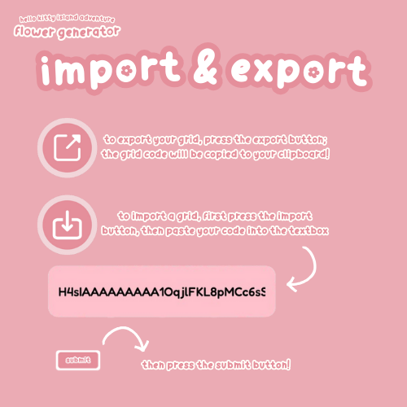

Want to share your beautiful flower garden with friends or save your favorite layouts? The Import & Export feature lets you save and share your flower grids with just a few clicks!

How It Works:
The Import & Export system uses advanced compression to convert your entire garden layout into a compact code string. When you export, the system captures all flower data (types, colors, patterns, effects), grid dimensions, disabled cells, plot layout settings, and even your preferences (sound, greenhouse mode, event settings). This data is then compressed and encoded into a shareable string that can be easily copied and pasted. When importing, the system decompresses the code and recreates your exact garden layout, including all flowers in their precise positions.
How to Export Your Garden:
- Create your perfect flower garden layout with all the flowers you want to save
- Open the "Settings" menu from the main interface
- Click the "Export Garden" button (look for the download/upward arrow icon)
- Your grid code will automatically be copied to your clipboard
- A notification will appear confirming the export was successful
- You can now paste this code anywhere to share with others - in messages, forums, or save it in a document
- The code works across different devices and browsers
How to Import a Garden:
- Open the "Settings" menu from the main interface
- Click the "Import Garden" button (look for the upload/downward arrow icon)
- A text input box will appear where you can paste a grid code
- Paste the code you received from a friend or saved previously
- Click the "Submit" button to load the garden
- Your flower garden will be instantly recreated with all flowers in their exact positions!
- The system will also restore your saved settings (greenhouse mode, event settings, etc.)
- Note: Importing will replace your current garden, so export first if you want to keep it!
What Gets Saved:
- Flower Types: All flower varieties and their exact positions in the grid
- Primary Colors: Every flower's main color information
- Secondary Colors: Secondary color data for flowers with patterns that support it
- Effects & Patterns: Special effects (like Molten, Cosmic, Crystal) and patterns (like Alternate, Pinwheel) on flowers
- Disabled Cells: Which plots are disabled and won't generate flowers
- Grid Dimensions: The size of your custom grid (rows and columns)
- Plot Layout: Which preset plot layout you're using (if any)
- Settings: Your preferences including sound settings, greenhouse mode, selected event, and event simulation status
- Complete Garden State: Everything needed to perfectly recreate your garden
Pro Tips:
- Backup Your Favorites: Export your best gardens to save them permanently. Keep a collection of your favorite breeding setups!
- Share with Friends: Send grid codes to friends so they can recreate your gardens. Great for sharing successful breeding strategies!
- Community Sharing: Share your codes on forums or social media to help other players. The community loves seeing creative garden designs!
- Experiment Safely: Export before making major changes so you can always go back. This lets you try new layouts without fear of losing your work.
- Collect Rare Gardens: Import codes from other players to discover new flower combinations and learn new breeding strategies.
- Version Compatibility: The system supports importing codes from previous versions of the generator, so older codes still work!
- Save Multiple Versions: Export different variations of your garden to compare strategies and outcomes.
Example Grid Code:
Grid codes look like this: H4sIAAAAAAAAA10qjlFKL8pMCc6sS...
These codes are compressed and encoded, making them compact and easy to share. They contain all the information needed to recreate your exact garden layout, including all flowers, colors, patterns, effects, and settings!
Troubleshooting:
- Invalid Code: If you get an error when importing, make sure you copied the entire code without any extra spaces or characters
- Missing Flowers: If some flowers don't appear after importing, they may not be valid for the current plot layout or event settings
- Code Too Long: Very large gardens may produce longer codes, but they should still work. If you have issues, try exporting again
The Import & Export feature makes it easy to share your creativity with the Hello Kitty Island Adventure community. Save your favorite gardens, share them with friends, and discover amazing flower combinations from other players!